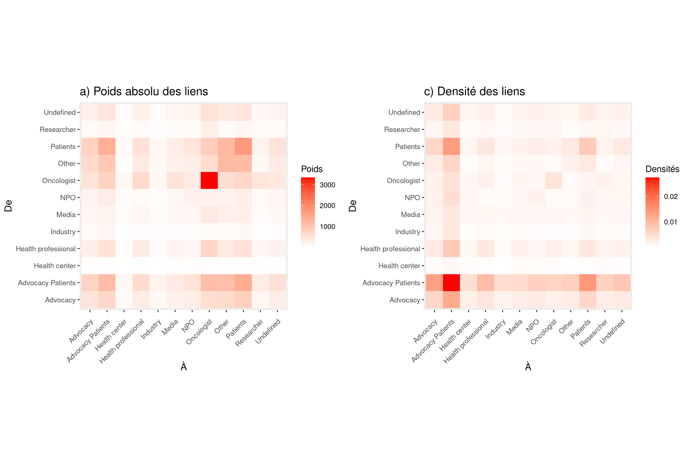

Visualisation d’une forme d’interaction entre les comptes: les replying to
Contents
Visualisation d’une forme d’interaction entre les comptes: les replying to#
Le fichier des tweets contient une variable appelée to_username (voir tableau ci-dessous). Elle recense toutes les fois qu’un compte a réagi à un tweet d’un autre compte en faisant “reply to”. Par exemple, dans le tweet ci-dessous, on voit que le Dr. Sue Desmond-Hellmann a répondu à Pearl Freier. On peut noter également que Desmond-Hellmann mentionned la FDA à travers l’expression “@US_FDA”. Dans le fichier de donnée, cette mention est enregistrée sous la variable mentioned_names.
| index | user_screen_name | to_username | mentioned_names | url | |
|---|---|---|---|---|---|
| 0 | 0 | SueDHellmann | PearlF | pearlf|us_fda | https://twitter.com/SueDHellmann/statuses/1111412159768977415 |
Cette variable est intéressante puisqu’elle permet de produire des graphes dirigés et de se faire une idée des asymétries existant entre les acteurs ou entre les catégories. On peut alors faire l’hypothèse que l’analyse de ces interactions est intéressante pour comprendre comment la “datafication” de l’oncologie affecte la structure des relations entre patients, soignants et chercheurs. La matrice de gauche ci-dessous semble indiquer qu’un volume important de réponses provient des patients, des oncologistes ou des “advocacy patients” et est destiné à ces mêmes catégories. La matrice de droite rend compte quand à elle de la “densité” des liens, c’est-à-dire le nombre d’arcs observés divisés par le nombre maximumn d’arcs pouvant existant entre chacun des groupes. Le but est de prendre en compte la taille des groupes, considérant qu’il ne peut pas y avoir plus de liens qu’il n’y a de noeuds.
Pour cela on pondère le nombre d’arcs observés par le nombre de noeuds composant chacun des deux groupes qu’ils relient. Par exemple, entre 2010 et 2022, sur les 7 078 comptes annotés, on a distingué 478 patients et 915 oncologues. Si chaque patient avait répondu au moins une fois à chaque oncologue ou réciproquement, on comptabiliserait un total de 437 370 arcs. Or, le nombre de liens observés est de 869 réponses envoyées par des patients à des oncologues, représentant environ 0,2 % des liens possibles. Ce nombre est de 699 dans le cas inverse (réponse d’un oncologue à un patient), soit 0,16 % environ des liens théoriques.

Toutefois, les matrices ci-dessus donnent une vision statique des interaction entre les groupes. Les graphes interactifs ci-après vise donc à rendre visible leur “dynamique”. Réalisés à l’aide de différentes librairies disponibles sous R, les graphes ont été construits de la manière suivantes:
Seuls les réponses entre comptes annotés sont conservées, ce qui donne un “sous-corpus” de 218 263 tweets sur 1 221 611.
Pour des raisons de temps calcul, on ne garde que les noeuds dont le degré de centralité est supérieur ou égal à 20 (seuil fixé arbitrairement), ce qui siginifie qu’on a seulement les comptes qui ont publié ou reçu au moins vingt réponses sur chaque période considérée (pour le moment seule la période du 1er janvier 2017 au 31 décmbre 2018 est représentée).
Pour chaque noeud, on définit une date d’arrivée et une date de départ qui correspondent respectivement à la première et à la dernière réponse publiée ou reçue.
De la même manière, chaque réponse a un début (la date de publication du tweet) et une fin (le lendemain de la publication du tweet).
Le principal intérêt de ces visualisations est de donner un aperçu des moments de plus ou moins grandes intensités en terme d’interaction et de constitution de groupes de discussion. Pour chacune des périodes, on a un graphe qui montre les échanges entre comptes et une autre qui rend compte des interactions entre catégories (oncologues, patients, etc.).
Note
Les graphes sont interactifs. Il suffit de cliquer sur un noeud pour connaître le nom de l’utilisateur ou de la catégorie qu’il représente. En cliquant sur un arc, on accède au contenu de la réponse. L’interprétabilité des messages est limitée puisqu’on ne connaît pas le contenu du tweet à l’origine de l’action “réponse à”. Ces tweets d’origine peuvent toutefois être aisément retrouvés grâce aux données disponibles dans le dataset.
Un lien peut contenir plusieurs messages lorsque deux comptes ont échangés plusieurs réponses dans la même journée. Ils sont alors séparés par un saut de ligne. On a également essayé d’identifier les réponses mentionnant un ou plusieurs biomarqueurs. Dans ce cas le lien est rouge. Malheureusement, les liens se chevauchent et il n’est pas toujours facile de distinguer la couleur des arcs. L’absence de légende permettant de reconnaître en un coup d’oeil le statut des noeuds (“advocacy”, “oncologist”, etc.) est l’autre défaut majeur des visualisations ci-dessous.
Période du 1er janvier 2017 au 31 décembre 2018#
Graphe des comptes#
Graphe des catégories de statut#
En réduisant le graphe des comptes au graphes des échanges entre catégories, on a conservé les réponses intra-groupe, c’est-à-dire le fait qu’un patient réponde à un autre patient par exemple. Malheureusement, ces “boucles” ne sont pas représentées sur l’animation ci-dessous. Lorsque les noeuds sont sans liens, cela signifie que les échanges se font uniquement au sein du groupe.